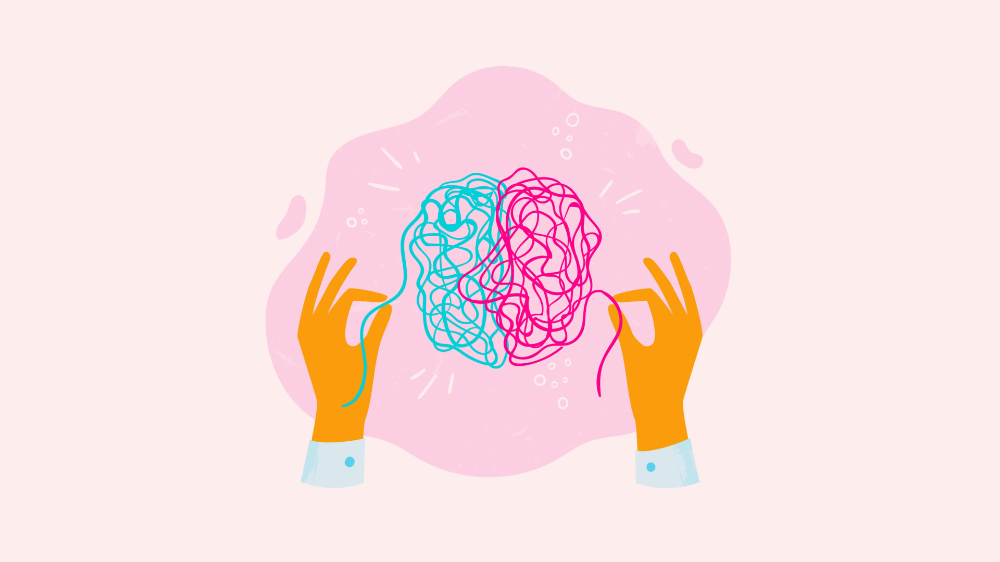

A mental health that describes all types of depression. your general emotional state or mood is distorted or inconsistent with your circumstances and interferes with your ability to function. You may be extremely sad, empty or irritable (depressed), or you may have periods of depression alternating with being excessively happy.
Anxiety Disorders:
A type of mental health condition. Anxiety makes it difficult to get through your day. Symptoms include feelings of nervousness, panic and fear as well as sweating and a rapid heartbeat..
Physchotic disorders:
are severe mental disorders that cause abnormal thinking and perceptions. People with psychoses lose touch with reality. Two of the main symptoms are delusions and hallucinations
Eating disorders :
abnormal or disturbed eating habits Eating disorders are a range of psychological conditions that cause unhealthy eating habits to develop. They might start with an obsession with food, body weight, or body shape. In severe cases, eating disorders can cause serious health consequences and may even result in death if left untreated.
